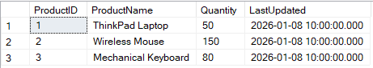
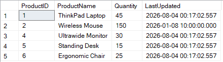

MERGE: Guia completo
Já se perguntou como sincronizar duas tabelas no banco de dados? No começo, o normal é escrever diversos comandos IF EXISTS, UPDATE e INSERT. Funciona, mas a query fica gigantesca e a performance não será das melhores.
Então talvez seja a hora de conhecer o comando MERGE. Neste artigo, vou detalhar como ele funciona, quando deve ser sua primeira opção em processos de ELT (Extract, Load, Transform) e quais cuidados tomar em ambientes com alta concorrência.
1. O que é o MERGE e o que ele substitui?
O comando MERGE (frequentemente chamado de "Upsert") combina operações de INSERT, UPDATE e DELETE em uma única transação atômica. Ele compara uma tabela de destino (Target) com uma tabela de origem (Source) através de uma condição de junção (JOIN).
Ele substitui o anti-pattern tradicional de escrever instruções separadas e sequenciais. Ao invés de o motor do banco de dados varrer as tabelas várias vezes para atualizar o que existe e inserir o que é novo, o MERGE processa a lógica em uma única passagem.
2. Prós, Contras e Onde Funciona
Onde Funciona?
A sintaxe MERGE é um padrão SQL (ANSI) suportado nativamente pelo Microsoft SQL Server (T-SQL), Oracle e PostgreSQL (a partir da versão 15).
Vantagens (Prós)
- Performance em Lote: Excelente para cargas de dados (ETL/ELT), movendo dados de uma camada Staging para a camada Gold/Produção, por exemplo.
- Atomicidade: Se houver erro na inserção de um registro, toda a operação falha, evitando que você fique com dados atualizados pela metade.
- Código Limpo: A sintaxe é extremamente legível e declarativa.
Desvantagens (Contras e Cuidados)
- Concorrência (Race Conditions): Em sistemas OLTP com muitas transações simultâneas, o
MERGEpode gerar problemas de concorrência. Se duas sessões tentarem rodar umMERGEna mesma tabela ao mesmo tempo, você pode acabar com chaves duplicadas. - Deadlocks: Como ele faz tudo de uma vez, exige locks (bloqueios) maiores do banco de dados.
- A Solução: Se precisar usar em um ambiente concorrente, utilize a hint
HOLDLOCKouNOLOCKna tabela de destino para serializar o acesso.
3. Cenário Prático: Sincronizando Staging e Produção como exemplo de uso
Vamos para o código. Imagine que temos uma rotina diária que recebe o inventário de produtos. Precisamos atualizar a tabela de Produção (Target) com base nos dados que chegaram na tabela temporária (Source).
Passo 1: Criando o Ambiente e Populando Dados
CREATE SCHEMA stg;
GO
CREATE TABLE dbo.Target_ProductInventory (
ProductID INT PRIMARY KEY,
ProductName VARCHAR(100),
Quantity INT,
LastUpdated DATETIME
);
CREATE TABLE stg.Source_ProductInventory (
ProductID INT PRIMARY KEY,
ProductName VARCHAR(100),
Quantity INT,
LastUpdated DATETIME
);
INSERT INTO dbo.Target_ProductInventory (ProductID, ProductName, Quantity, LastUpdated)
VALUES
(1, 'Notebook ThinkPad', 50, '2026-08-01 10:00:00'),
(2, 'Mouse Sem Fio', 150, '2026-08-01 10:00:00'),
(3, 'Teclado Mecânico', 80, '2026-08-01 10:00:00');
INSERT INTO stg.Source_ProductInventory (ProductID, ProductName, Quantity, LastUpdated)
VALUES
(1, 'Notebook ThinkPad', 45, GETDATE()), -- Existente: Baixa no estoque (Requer UPDATE)
(2, 'Mouse Sem Fio', 150, GETDATE()), -- Existente: Sem mudanças
(4, 'Monitor Ultrawide', 30, GETDATE()), -- Novo (Requer INSERT)
(5, 'Mesa com Ajuste de Altura', 15, GETDATE()); -- Novo (Requer INSERT)
GOComo a tabela de Produção está ANTES do MERGE:

Tabela dbo.Target_ProductInventory contendo apenas 3 registros originais.
4. A Procedure com a Lógica do MERGE
Agora, vamos criar a Stored Procedure que fará a sincronização. Repare em como a lógica flui naturalmente, lidando com cada cenário MATCHED e NOT MATCHED.
USE DEVELOPMENT
GO
IF OBJECT_ID('proc_merge') IS NOT NULL
BEGIN
DROP PROCEDURE proc_merge
END
GO
CREATE PROCEDURE proc_merge
AS
BEGIN
SET NOCOUNT ON;
MERGE INTO dbo.Target_ProductInventory AS target_inv
USING stg.Source_ProductInventory AS source_inv
ON (target_inv.ProductID = source_inv.ProductID)
WHEN MATCHED AND target_inv.Quantity <> source_inv.Quantity THEN
UPDATE SET
target_inv.Quantity = source_inv.Quantity,
target_inv.LastUpdated = source_inv.LastUpdated
WHEN NOT MATCHED BY TARGET THEN
INSERT (ProductID, ProductName, Quantity, LastUpdated)
VALUES (source_inv.ProductID, source_inv.ProductName, source_inv.Quantity, source_inv.LastUpdated)
WHEN NOT MATCHED BY SOURCE THEN
DELETE ;
END;
GO
EXEC proc_merge;Como a tabela de Produção fica DEPOIS do MERGE:

Tabela sincronizada: Estoque atualizado e novos produtos inseridos.
O MERGE é uma ferramenta indispensável no cinto de utilidades de qualquer engenheiro ou desenvolvedor de banco de dados. Sabendo exatamente onde (processos em lote) e como aplicá-lo (garantindo índices corretos nas chaves de JOIN), você constrói rotinas de dados muito mais rápidas, limpas e profissionais.
Obrigado pela leitura e até o próximo artigo!